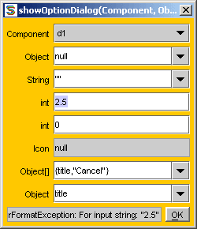

Program by
Akif Eyler from Istanbul, Turkey. Web design by Celalettin Penbe.
Last update: Oct 2004
Program by
Akif Eyler from Istanbul, Turkey. Web design by Celalettin Penbe.
Last update: Oct 2004
| SSS Home | Applet | Download | Sample Screen | User Guide | API | FAQ | | ||
Small Simple Safe -- User Guide |
||
|
Teacher
Since V1.45, SSS has self-teaching capability.
1. Click on Menu.chooser(), then on teacher(String),
2. Click on Menu.chooser(), then on teacher(String), |
|
|
Active keys in SSS
|
 | |
The rest of this page was written before
the self-teaching capability.
Please download and open SSS
before reading.
SSS should be active while reading this page.
Now click on MSG field and press Enter.
Our first object appears.
Its type is String, its name is MSG, and its value is shown.
The border color was changed to emphasize that we are looking
at an object, not a class any more.
All public methods of this object are shown at the right pane.
Click on charAt(int) and enter 0 in the dialog,
you get S as the first char of MSG.
MSG.charAt(0); //--> SClick on indexOf(int) and enter 97, you get 2 as the first occurrence of 'a' in MSG.
MSG.indexOf(97); //--> 2In order to see class String click on the thick separator at the top of the right pane.
b = new String("Bob"); //--> "Bob"
Then press Period "." key and make another String
with name t and value "Tim":
t = new String("Tim"); //--> "Tim"
Now we want to make a Set object.
s = new TreeSet(); //--> []Then add the String objects into the set.
s.add(t); //--> true
s.add(b); //--> true
s.add(t); //--> false
s.add("Ann"); //--> true
s.add("Bob"); //--> false
There are 3 members in the set, alphabetically ordered.
s.size(); //--> 3
Finally, copy the set into an Object array, by clicking on toArray() and entering "a" in the dialog, or by entering toArray in the command area.
a = s.toArray(); //--> Object[3]
Program by
Akif Eyler from Istanbul, Turkey. Web design by Celalettin Penbe.
Last update: Oct 2004